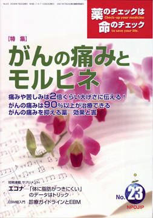

No.23 特集 がんの痛みとモルヒネ 2006年7月 発行
17号「がんの予防」に始まったがん関連特集の締めくくりは、23号「がんの痛み」です。
胃がん、肝がん、子宮がんなどまだ扱ってないものもありますが、これらの特集は時期を変え、いずれお届けしたいと思います。
がんといえば「痛み」。痛みのつらさ・恐怖が、がんという病をいっそうつらい・怖いものにしていますが、
その痛みは、モルヒネという確実な治療薬を駆使すればほとんど克服することができます。
ところが、一般の人だけでなく、医療者自身の、モルヒネ＝麻薬＝中毒怖いという偏見と、勉強不足のために
医療現場で十分に使いこなせていません。
結局、がんのつらさに加えて痛みとそれへの恐怖に苦しむのはがん患者さん。
医療者には、効かない抗がん剤の知識より、確実に痛みが取れるモルヒネの使い方に習熟するための勉強をきちんと迫りましょう。
「がんの痛み」の治療、特にモルヒネ使用について適切な知識を持っていただくとともに、
緩和ケアやホスピスケアについても紹介したいと思います。
もくじ
特集
■Ｑ&Ａ 痛みや苦しみは2倍くらい大げさに伝える！
■がんの痛み波９０％以上が治療できる
■がんの痛みを抑える薬―効果と害
■薬の説明書（NPOJIPの判定付き）
・モルヒネ速効剤
・モルヒネ徐放剤
・フェンタニル
・ナロキソン
短期連載
■サプリメント：エコナ
「体に脂肪がつきにくい」のデータはトリック
提言
■NPOJIPの提言
臨床研究の安全・承認根拠チェックは根本から考え直すとき
治験の推進はその反省後に
連載
■みんなのやさしい生命倫理 ２３
EBMの生命倫理（２）
■EBM超入門（１２）
診療ガイドラインとEBM（２）
■リレーエッセイ 「身も心もお任せして」
■映画のなかのクスリ（１６） カフェイン
■行ってきました
シンポジウム「HIV・AIDSとともに生きる」
質問箱
■１ 口の中に酸っぱい水やにがい水を感じる
■２ アトピー性皮膚炎の特効薬は？
■読者の声
・薬のチェック５号の読者の声を読んで
・糖尿病の治療のこと など
■書評
・『のんではいけない薬―必要な薬と不要な薬』
・『この命、つむぎつづけて』
・『検査値と病気 間違いだらけの診断基準』
■第５回医薬ビジランスセミナーのお知らせ／参加申込用紙
■編集後記
短期連載 サプリメント：エコナ より
「体に脂肪がつきにくい」のデータはトリック
ヒット商品にみるサプリメントの実像
前回（２１号）は、サプリメントの中から食用油エコナをとりあげ、発がん性（がん促進作用）が問題となっていることを
指摘しました。「体に脂肪がつきにくい」という効果表示を国が認めているエコナですが、果たしてそれは本当でしょうか？
今回はそれを検証しましょう。
（以下、引用省略）
詳しくは本誌で。